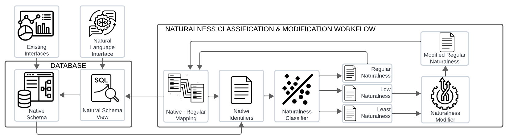

About SNAILS¶
What is SNAILS?¶
SNAILS is a set of NL-to-SQL-related artifacts designed to explore the effects of schema naming on LLM-based NL-to-SQL performance. It includes a set of real-world databases and associated natural language (NL) : SQL gold query pairs, human-labeled data containing naturalness classifications the tables and columns in the database collection, a model and method for ML-based naturalness classification, and prompting strategies for improving schema identifier naturalness.
Access SNAILS Artifacts¶
What SNAILS Isn’t:¶
SNAILS is not a fully-featured benchmark similar to Spider or BIRD that maintains a leaderboard, and provides a training, and dev dataset while also retaining a hidden test set. Instead SNAILS artifacts are a starting point for further research into schema-specific effects on NL-to-SQL. It can also be used to support the development of new NL-to-SQL methods. We encourage other researchers and developers to use our artifacts for their research objectives, and invite collaboration and feedback from the community.